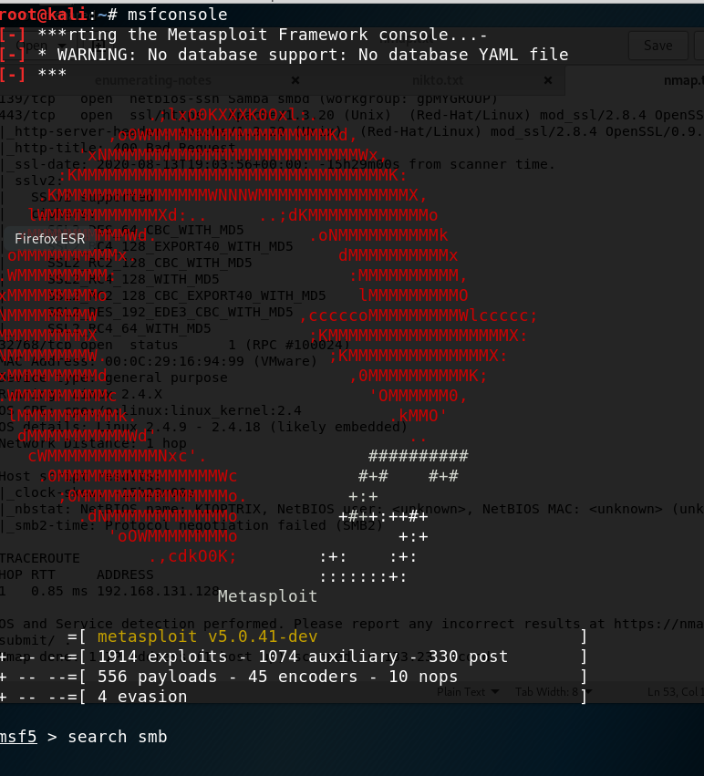

We're gonna focus over to SMB on port 139
SMB is a file share.
in nmap scanning there is no enough and exact version information so we need to establish a connection to kioptrix machine
so first time we are going to use metasploit.


there is a long list in here so we need to distinct this things. So in first section we can see the type of module which is auxiliary module and that is the relevant to scanning and enumeration. And in last section we see the type of module in a privatised way.

we want to use this module and lets say info and see what we have

we can see the options we have.

RHOSTS stands for remote hosts and these are always victims. These are the target address. RHOSTS > we are attacking only one machine
RHOSTS+ > more than one machine

so now we have alittle bit information. Knowing samba 2.2.1a is very spesific and it is going to help us. We can note that.
WHAT IS GOING TO SET YOU APART OTHER HACKERS OR OTHER PEOPLE EVEN TRYING TO GET INTO THE FIELD IS YOUR ABILITY TO INFORMATION GATHERING AND ENUMERATE.
We are going to meet another tool which is smbclient. Smbclient is a tool that is going to attempt to connect to the fileshare that is out there. Now if we have the ability to connect to the file share with anonymous access what that will do is we can get in there and we could potentially see files. Now these files might give us an inkling of what's going on the network or they may even be valuable to us.
YOU NEVER KNOW WHAT YOU'RE GONNA FIND UNTIL YOU ACTUALLY LOOK.

GO AHEAD AND PRESS ENTER

so we did list out a fileshare.
In this here there are two sharename and ADMIN$ may be very valuable to us. Let's try to connect ADMIN$ file share.

we are being unsuccessful.
Now we can try to connect the IPC$ sharename just a proof of concept.

now we have access

ACCESS_DENIED
So this is what we call a dead end. We couldn't gather extra information thus we have one thing in here and it is that.